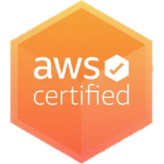
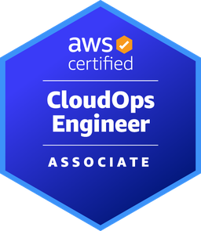
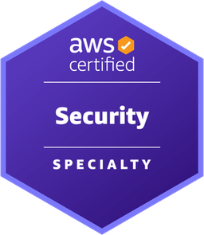

A rationale for every option
You learn why the right answer is right and why each wrong answer fails.

AWS Practice ★ Star on GitHubFree965 questions · 3 exams · no signup
Original scenario questions for three AWS certifications, timed mock exams, and a rationale for every option. No account, no ads.
Turn on JavaScript to try a sample question here, or pick an exam below.
AIB-C01
For leaders who decide where AI goes in a business: AI fundamentals, strategy and business value, governance and responsible AI, and transformation.

SOA-C03
The successor to SysOps Administrator: monitoring and remediation, reliability, deployment and automation, security, and networking.

SCS-C03
Detection, incident response, infrastructure security, identity and access management, data protection, and governance.
You learn why the right answer is right and why each wrong answer fails.
Same question count and time limit as the official exam guide.
Written against the public AWS exam guides. No dumps, nothing copied from the real exam or paid courses.
No signup, no ads. Your progress stays in your browser, and every question is on GitHub for you to read, check or correct.
Read the sourceYes. Every question, rationale and mock exam is free. There is no account, no ads and no paywall, and the code and questions are open source under the MIT license.
No. Every question is original and written against the public AWS exam guides. None come from the real exam, paid courses or dumps.
AWS Certified AI Business Strategist AIB-C01 (beta format), AWS Certified CloudOps Engineer - Associate SOA-C03, and AWS Certified Security - Specialty SCS-C03.
Each mock exam uses the question count and time limit from the official exam guide: 85 questions in 170 minutes for AIB-C01 (beta), 65 in 130 minutes for SOA-C03, and 65 in 170 minutes for SCS-C03.
Yes, in your own browser only. Your answers are never sent to a server, and clearing site data resets it.
Open an issue on that exam's GitHub repository. Each site links to its repository in the header and footer.